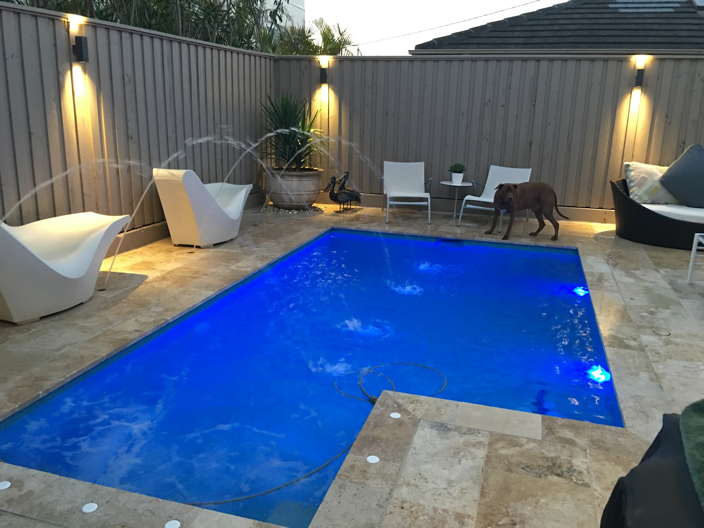
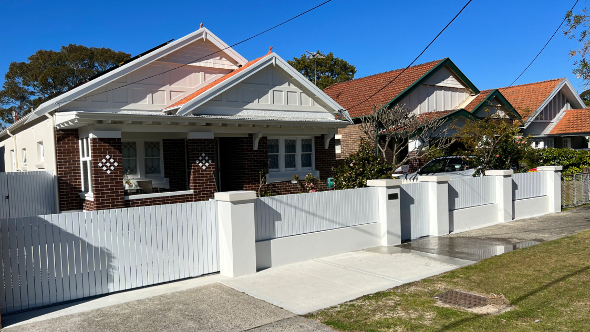
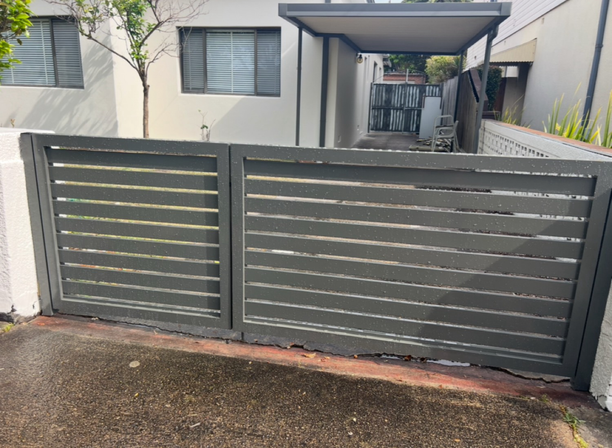
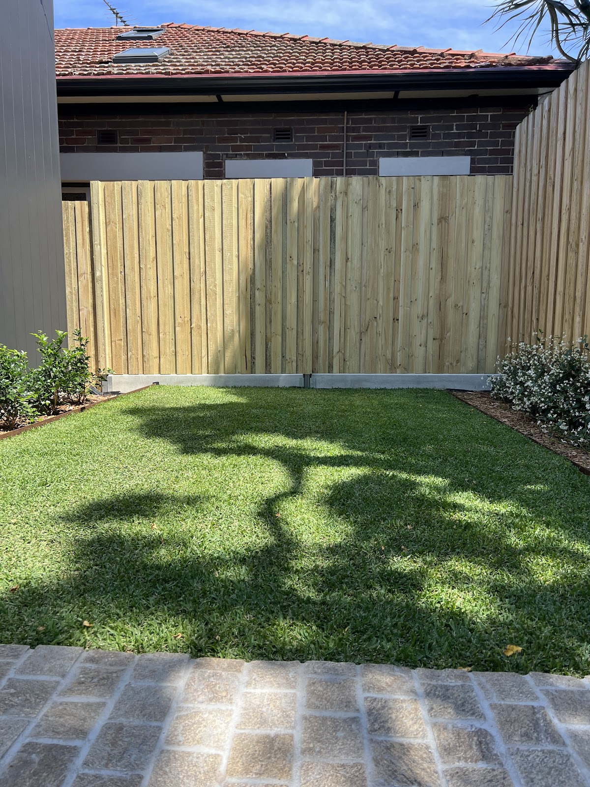
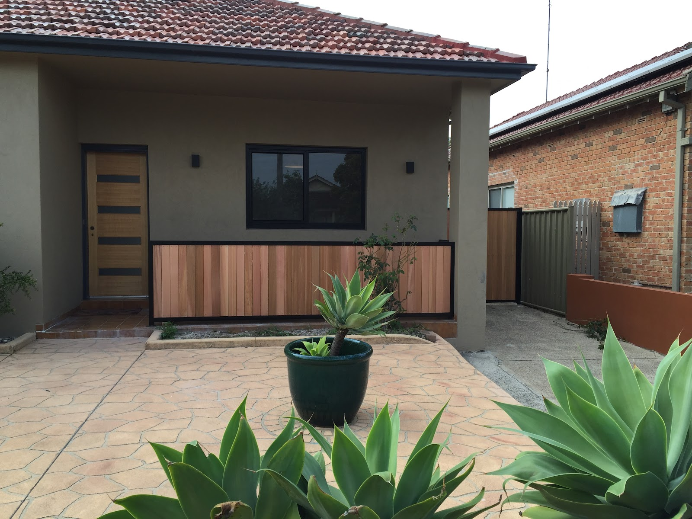
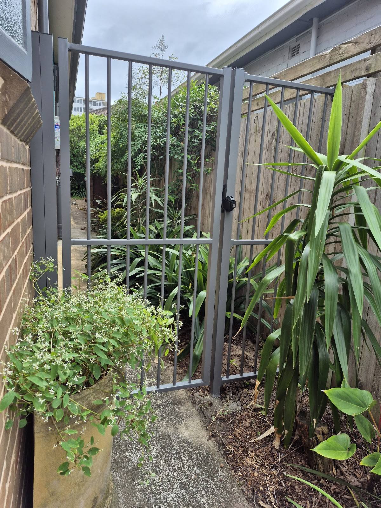

Timber fencing
Paling, slat and lapped-and-capped. Warm, classic, and run dead straight along the boundary.
Timber, Colorbond, aluminium and pool fencing — plus the gate that finally closes the way it should. Kiran, Arthur and the crew, on time and on budget.
Residential fencing done the proper way — the right material for the job, finished clean and built to last.
Paling, slat and lapped-and-capped. Warm, classic, and run dead straight along the boundary.
Low-maintenance steel in Monument, Woodland Grey and the rest. Clean lines, long life, no painting.
Compliant pool fencing and tubular aluminium that looks sharp and keeps the family safe.
The bit everyone gets wrong. Hung true, latched right, and swinging sweet for years — it's our thing.
Timber sleeper walls that hold the line, tidy the slope and make the yard usable again.
Storm damage, sagging gates, or someone else's shoddy job — identified and sorted, often in an afternoon.
Real fences and gates, finished and photographed on the job.






For over a decade, Kiran, Arthur and the team have fenced the Eastern Suburbs the proper way — arriving when we say, helping you pick the right style and colour, and finishing every line dead straight. Fair prices, clean sites, and gates that actually work.
It's why so much of our work comes from neighbours who saw the last job — and from customers we've looked after for ten years and more.
“Friendly, professional and meticulous — they helped me choose the style and colour, and even dealt with a surprise underground pipe without fuss.”— Margot, on Google
“Using Affordable Fencing for over 10 years now — the boys are professional, well-priced and the workmanship is great. Highly recommend to anyone.”
“Kiri and Arthur fixed a gate a shoddy fencer had botched — found the problem and sorted it in an afternoon, and improved the latch while they were at it.”
“The whole experience was smooth and easy. Friendly, professional, kept me in the loop — and the gate is exactly what I wanted.”
Pick up the phone and have a chat — Kiran or Arthur will talk you through options and come measure up. Free, no-obligation quotes.
Call 0417 226 520 →